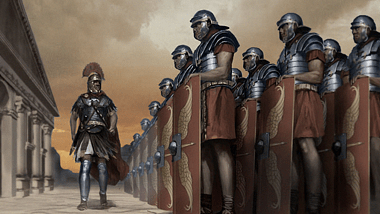
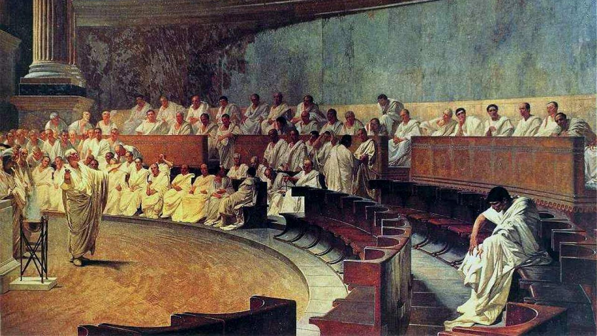
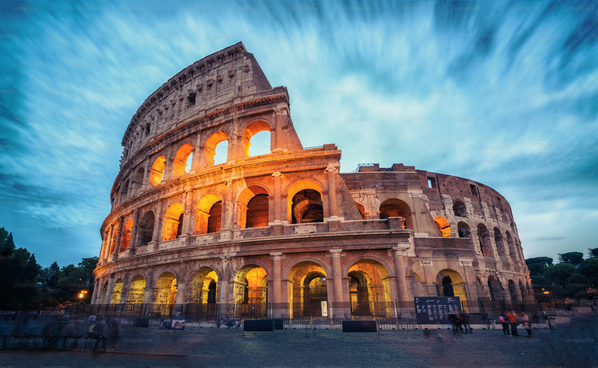
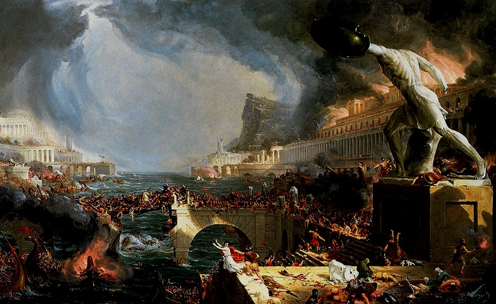

Period: 27 BCE – 476 CE (Western Empire)
Founder: Augustus Caesar
Capital(s): Rome, Constantinople
Legacy: Law, Engineering, Military Organization, Latin Language
Introduction
The Roman Empire, perhaps the most iconic and influential civilization in Western history, emerged from a small city-state on the banks of the Tiber River to become a sprawling superpower that defined the classical world. From the disciplined ranks of its legions to the grandeur of its marble monuments, Rome’s legacy endures in law, politics, language, architecture, and more. This article explores the journey of the Roman Empire—from its Republican roots and rise to power, through its height under the Caesars, to its gradual transformation and eventual fall.
Origins: From Republic to Empire
Rome’s early days were marked by monarchy, but by the 6th century BCE, it transitioned into a Republic governed by elected senators. This system, though democratic in spirit, was rife with class tension. As Rome expanded across the Italian peninsula, internal pressures and ambitious generals—most notably Julius Caesar—set the stage for its transformation into an autocratic empire. In 27 BCE, Octavian, Caesar’s adopted heir, was granted the title “Augustus,” becoming Rome’s first emperor and ushering in the Pax Romana.

Military Power and Expansion
The Roman military was a cornerstone of imperial strength. Its legions were well-trained, highly organized, and strategically deployed. From Britain to Egypt, Gaul to Judea, Roman expansion was relentless. Roads, forts, and cities followed wherever legions marched. Conquest was often followed by integration, as Rome offered citizenship, infrastructure, and protection to conquered peoples who pledged loyalty.
Government and Legal Innovation
Roman law remains one of the empire’s most enduring contributions. The Twelve Tables laid the groundwork, but it was under the emperors that Roman jurisprudence blossomed. Principles like “innocent until proven guilty” and contractual fairness still echo in modern legal systems. The centralized imperial bureaucracy—with its governors, tax collectors, and legal officials—allowed for efficient management of the vast empire.
Engineering and Architecture
Rome’s architectural achievements were monumental—both figuratively and literally. Aqueducts carried water across vast distances. The Colosseum, Pantheon, and Roman roads exemplify the blend of functionality and aesthetic grandeur. Techniques like the arch, dome, and concrete construction revolutionized building practices and influenced civilizations for millennia.
Religion and Cultural Shifts
Initially polytheistic, Rome adopted gods from Greek and Etruscan traditions. Over time, mystery religions and Eastern cults grew popular. The most significant shift came with Christianity. Once a persecuted sect, it became the empire’s official religion under Constantine in the 4th century CE. This change altered the empire’s cultural identity and shaped the spiritual landscape of Europe and beyond.
Economic Systems and Trade
A vast trade network connected Rome with distant regions—from the Silk Roads of Asia to the spice routes of Arabia. Roman coins were widely accepted, markets flourished, and urban centers grew. However, economic inequality and inflation were persistent problems, particularly in the later centuries of the empire.
Challenges and Decline
The empire's decline was not due to a single event, but a convergence of internal and external pressures. Political instability, overexpansion, corruption, civil war, and reliance on foreign mercenaries weakened Rome. Barbarian invasions, notably by the Visigoths and Vandals, led to the eventual fall of the Western Empire in 476 CE. However, the Eastern Roman Empire, or Byzantine Empire, endured for another thousand years.
Cultural Legacy and Intellectual Contributions
Latin, the language of Rome, evolved into the Romance languages—French, Spanish, Italian, and more. Roman literature, with works by Virgil, Cicero, and Seneca, influenced Renaissance thinkers and remains a cornerstone of Western education. Roman philosophy—particularly Stoicism—found a champion in Marcus Aurelius, whose “Meditations” are still read today.
Modern Influence and Lasting Legacy
The Roman Empire’s legacy permeates modern institutions. Republican ideals inspired Enlightenment thinkers and the framers of constitutions worldwide. Roman law remains the basis for many civil legal systems. In architecture, governance, religion, and language, the echoes of Rome still shape our world.
Further Reading and Resources
- "Rubicon: The Last Years of the Roman Republic" by Tom Holland – A vivid narrative of Rome’s political transition.
- "SPQR: A History of Ancient Rome" by Mary Beard – A modern classic on the life and society of ancient Romans.
- "The Decline and Fall of the Roman Empire" by Edward Gibbon – A foundational historical work.
- "The Romans: From Village to Empire" – A scholarly overview of Roman growth and administration.
Conclusion
The Roman Empire stands as a monumental chapter in human history. It was a civilization of lawgivers, warriors, engineers, and thinkers. While the empire itself has vanished, its spirit endures in the institutions, languages, and ideals that form the bedrock of the modern Western world. Rome's story is a reminder of what can be built—and what must be safeguarded—when ambition, innovation, and governance converge on a grand scale.